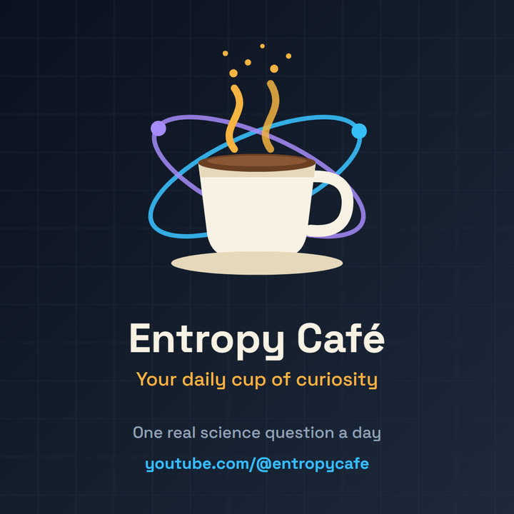
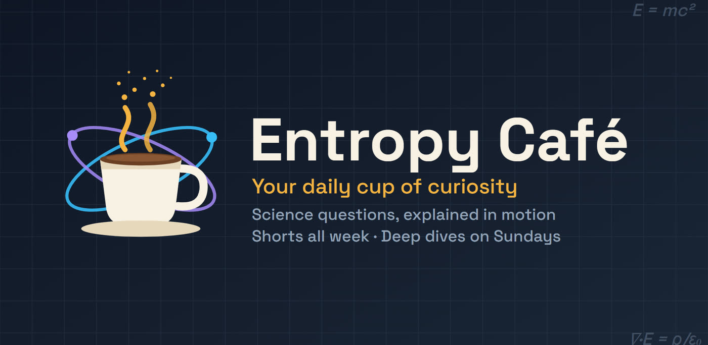

About
A café for people who can’t stop asking why.
Entropy Café is a science channel built on one habit: take a single real question, and answer it properly.
The idea
Most of us carry around questions we never got a straight answer to. Why doesn’t a moving bicycle fall over? If the Sun vanished, how long until we’d notice? How do you dig a tunnel under a river without the river pouring in?
Each Entropy Café video takes one of those questions and works through it step by step, with animation that shows what is going on instead of just describing it. Shorts answer one question in under a minute. Deep dives take a few minutes to follow a bigger idea all the way through.
The name comes from physics. Entropy is the tendency of things to spread out, like the smell of coffee filling a room. Good questions spread the same way.

What we promise
Three rules behind every video.
Real sources
Research starts with primary and authoritative sources: space agencies, standards bodies, peer-reviewed papers and university pages. Well-known facts are still cross-checked.
Honest numbers
Every figure is recomputed and recorded in a fact-check table. Numbers are rounded honestly, and a model or an estimate is always called one.
No jargon
If an idea doesn’t fit comfortably, the idea gets simplified, not the explanation rushed. Anything left out is saved for a deep dive.

Who makes it
Entropy Café is made by a data scientist with 17 years of experience building AI and data systems, who wanted the kind of science channel that respects both the viewer’s time and the facts.
The videos are produced in a small custom studio. Scripts, animation and narration are made with the help of AI tools, and every video is reviewed by a person before it is published.
Questions and corrections
Have a question you’d like answered, or spotted something that looks wrong? Leave a comment on any video on YouTube, or send a message on Instagram. Corrections are welcome and taken seriously.